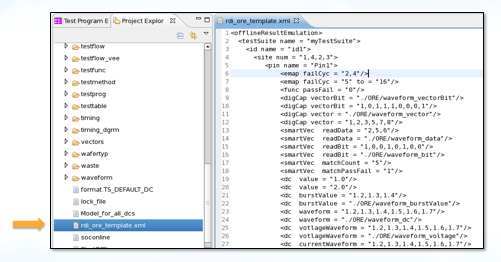

Template file from the first run
SmartRDI provides a mechanism for generating an ORE file that can be used as a template.
You must first set ENABLE_ORE = TRUE and ORE_FILE =
"rdi_ore_template.xml" in the RDI_Configure file.
During the first run, an ORE file template named rdi_ore_template.xml is automatically generated under the device's root directory.
You can rename, move or modify this file according to the needs of your test program.

The rdi_ore_template.xml template is an XML file. Refer to ORE file format for how to use elements and attributes in this XML file.
Functional changes
- Introduced in SmartRDI 2.5.0